不再重复方法教学，以独立研究证据建立命题、规则与首轮五款提案
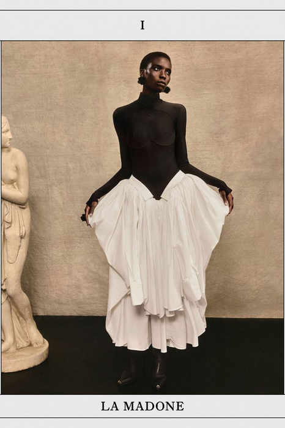
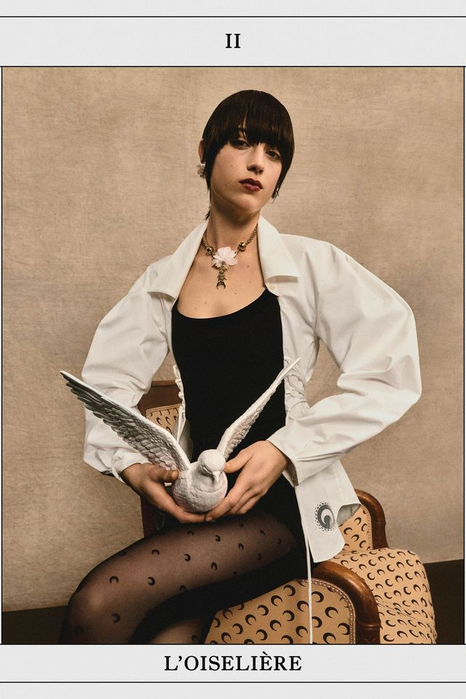
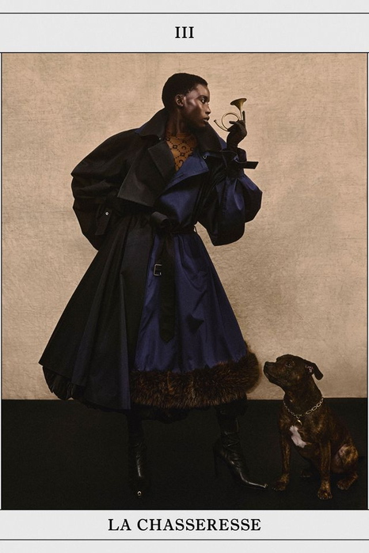
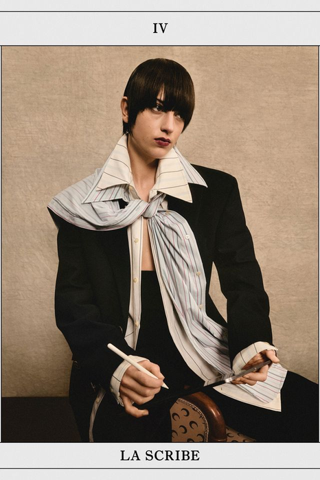
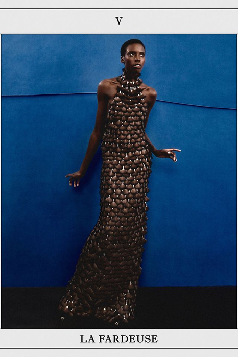
前8周建立方法并完成中期验证；后8周深化春夏与秋冬系列，最终独立完成主题系列与答辩。
不是听懂概念，而是让判断进入图、样片、系列编排和编辑记录。
研究证据的筛选；概念张力的建立；主题向可执行系列规则的转译。
避免把个人偏好、情绪词或图像气氛误当作设计命题，并让每条规则都能生成多款而非单一造型。
完成一份具有证据来源、核心命题、系列常量、可控变量和首轮五款结构草图的提案。
提交研究证据图谱1页、命题卡1页、材料/结构实验4组、五款雏形线稿1页。
第12周是最后一次由课程给定方向；从本周起题目由你自己出。今天要做的第一件事是选，不是想。
下面五项来自《25级〈女装设计〉课程大纲》与《考核大纲》原文，说明本周的每一项输出将落到哪里、如何计分。
本周是唯一一次三个目标同时被调用的课：审美判断、设计能力与产品思维。
前12周分开练，这一周合起来用。
三大考核块之一，本周的研究图谱与命题卡是它的直接证据。
主题定不下来，后面三周都会被拖住。
占比 40%。五款雏形是期末系列的第一版骨架。
这一版定的常量，期末很难再推翻。
证据图谱、命题卡、四组实验与五款线稿，计入课堂表现与作业。
被否掉的命题也计分——前提是写清为什么否。
本周确定的命题将按六项标准（10/10/20/20/20/20）接受最终评分。
换题的窗口只到下周；再往后只能在现有命题里改。
教材把调研画成一条有终点的流程——终点是“开始设计”，不是“资料齐了”。
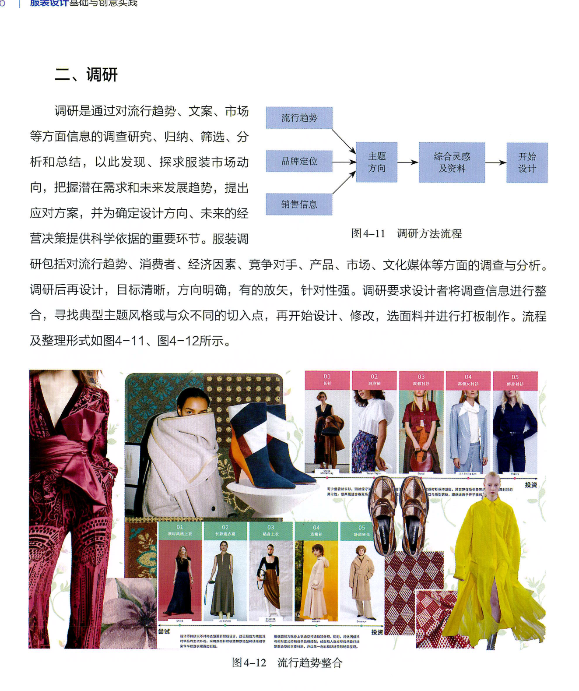
图4-11 的流程：流行趋势、品牌定位、销售信息三条线先并行，再汇到“主题方向”这一个点上。三条线缺一条，方向就是猜的。
图4-12 的整合：板面把款式排成两行，每行标注“尝试”或“投资”——同一批资料被分成了两种商业决策，而不是一堆好看的图。
可迁移的做法：调研的产出是“一个方向 + 一组分类”。你的证据墙如果分不出类，说明还没调研完。
观察任务：在你的资料里找出三条来源不同的线索，看它们能不能汇到同一个方向。
来源：于芳《服装设计基础与创意实践》（中国纺织出版社，2023），第56页。图像按教学需要裁切局部，未改变原始比例。
材料样、拼贴和人体草图钉在同一本本子里——主题板不是终点，是草图的输入。
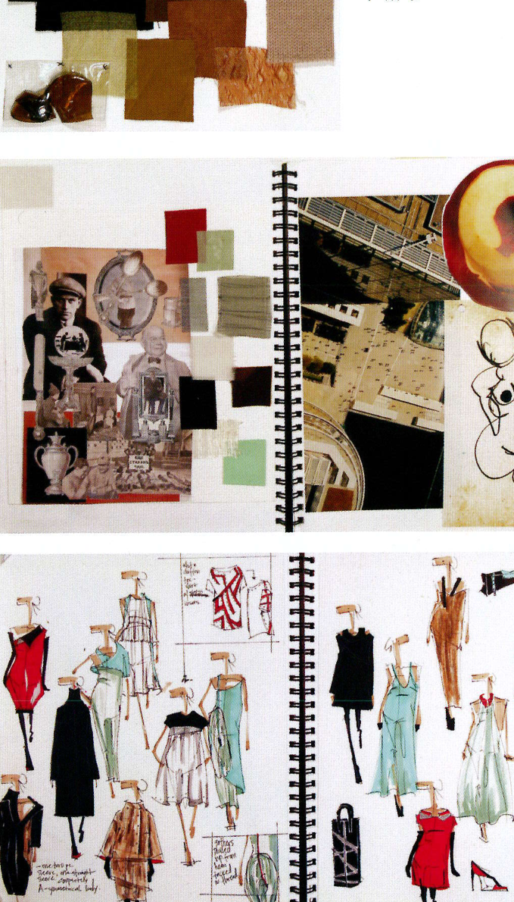
上：材料样直接钉在页上。颜色和手感被同时固定下来——不是“大概是暖色”，是这几块布。
中：拼贴保留来源的原始形态。建筑、器物、人像各自还认得出，没有被修饰成统一气氛。
下：草图页上的颜色和材料，能一条条对回上面两页。这才是主题板起作用的唯一证据。
观察任务：翻到你自己的草图页——每一处颜色和材料，都能指出它来自主题板的哪一块吗？
来源：Steven Faerm《The Fashion Design Course》（Quarto Publishing plc），第90页。图像按教学需要裁切局部，未改变原始比例。
术语必须能够指导一个动作或判断。
包含研究对象、核心张力、目标身体关系与行动方向的可验证陈述。
由相互支持或相互冲突的图像、文本、物件和观察记录组成的研究单元。
保护/暴露、秩序/失控等能够持续产生选择与冲突的双向关系。
跨越多个品类仍可被识别的常量，以及用于扩展差异的受控变量。
证据、张力、规则、验证是一条链。断在哪一环，出来的信号不一样。
资料太整齐，压不出矛盾，就没有可推进的动力。
失败信号：所有资料都在说同一件事。
张力停在形容词，编不成可画的形状。
失败信号：规则写成“要有秩序感”。
规则太窄，只能生成一款，撑不起系列。
失败信号：换一个品类，规则就用不上。
实验做完了，却回不到最初的问题。
失败信号：实验好看，但答不出它验证了什么。
左边那一项做起来快得多，所以大多数人停在左边。右边才是本周要交的东西。
主题词只命名领域；设计命题说明证据、矛盾、身体关系与设计行动。
检验：把它读给同学听，对方能不能立刻说出你要做什么？说不出，就还是主题词。
拼贴追求气氛相似；研究图谱显示来源、类别、关系、空缺与可转移规则。
检验：随手指板上一张图，你能不能说出它的来源、类别和它跟旁边那张的关系？
模仿复制可见结果；转译保留生成逻辑并在新的身体、材料和品类中重写。
检验：把参考对象的材料和品类都换掉，你的规则还生成得出东西吗？
先找出哪一件是五套都在重复的，再判断重复到什么程度就变成了偷懒。
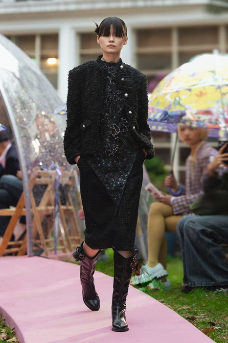
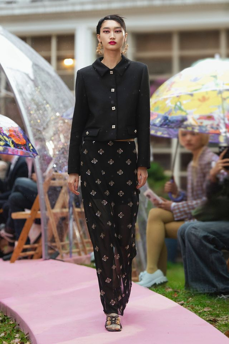
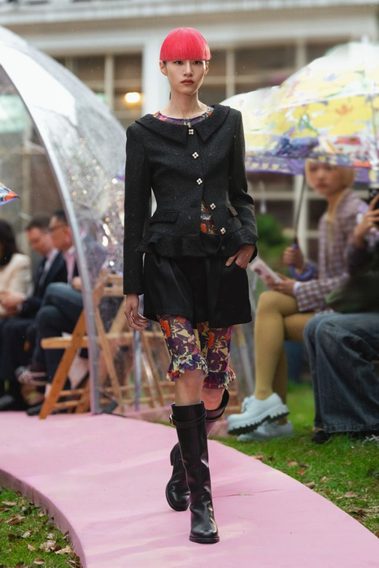
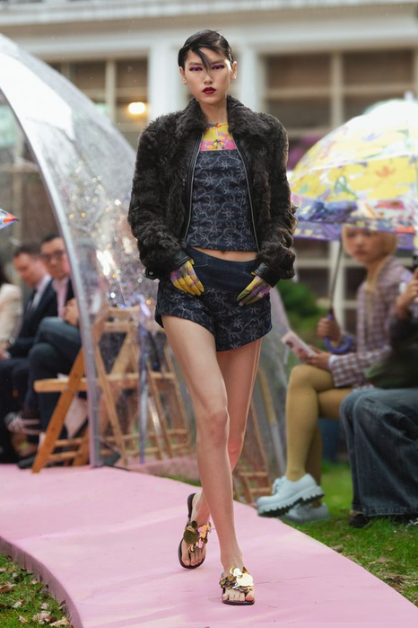
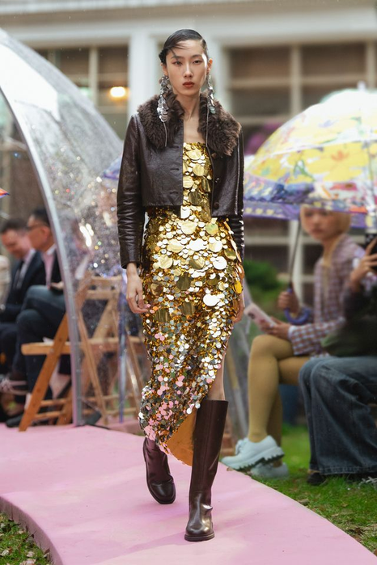
课堂回答：上衣版型不变、只换材料——这算“一条规则用了五次”，还是“一款卖了五次”？分界线在哪里？
这一组的证据同时在两个地方——谁在穿，以及衣服用什么做的。
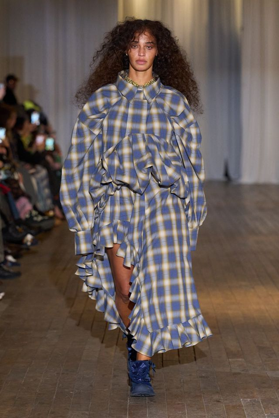
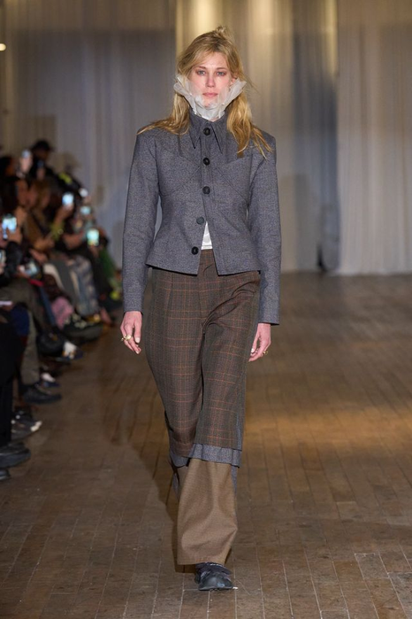
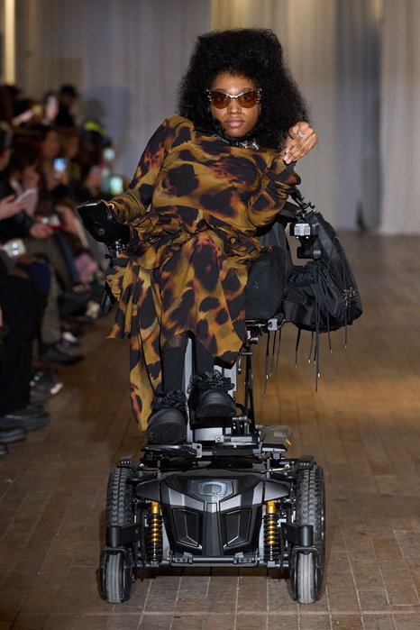
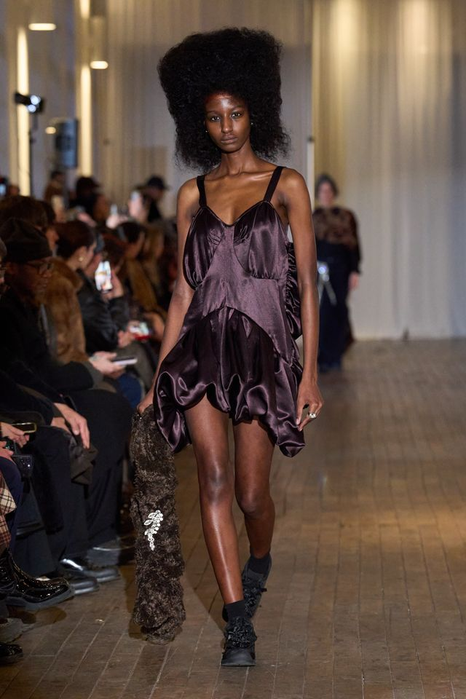
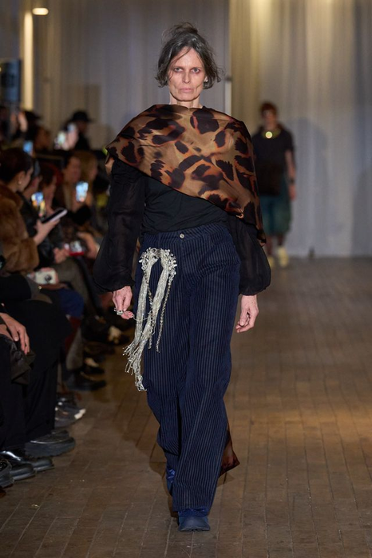
课堂回答：如果把模特全部换成标准身材，这五套还剩下什么？剩下的部分，才是衣服自己承担的议题。
每个阶段结束都要留下图像、标注或修改记录。
两人一组用无标签观察句标注15项资料，删除仅提供气氛的图像。
建立4个证据簇，并指出每簇尚缺的身体、材料或语境证据。
把‘关于某物’改写成含对象、张力、穿着者和设计行动的一句话。
完成轮廓、结构、材料、色彩、细节五条规则及禁用项。
第1课时建立了命题与规则；第2课时用二维播种和三维试探，接受第一次批评。
方法与实验9′ → 实操28′ → 讲评与评价5′ → 预告与收尾3′
每个动作都必须产生可比较的前后版本。
每类资料只保留能回答具体问题的3项，并标注来源、日期与观察句。
禁用风格形容词，只写形态、动作、材料和空间关系。
按重复、对立、因果和缺失四种关系重排证据。
把资料压缩为一组可同时成立的矛盾词，并说明身体层面的冲突。
用‘为谁/在何处/面对何种张力/通过何种行动’完成一句话命题。
为轮廓、结构、材料、色彩、细节各写一条可画、可做、可判断的规则。
加入一张不符合预期的证据，检查命题是否过于宽泛或只会自我证明。
用同一常量和不同变量生成5个低精度结构雏形，先检查差异跨度。
矩阵用来生成与比较，不要求把所有组合都做成最终款。
| 变量 | A | B | C | D |
|---|---|---|---|---|
| 身体关系 | 包裹 | 悬离 | 压缩 | 暴露 |
| 轮廓 | 垂直窄长 | 横向扩张 | 局部膨胀 | 断裂分段 |
| 结构策略 | 连续裁片 | 模块拼接 | 外置支撑 | 可拆连接 |
| 材料行为 | 垂坠 | 挺立 | 透明叠层 | 回收重组 |
| 系列角色 | 开场声明 | 核心论证 | 商业连接 | 实验峰值 |
怎么用：先在“身体关系”一行选定 1 项作为常量，五款全部不许改它；其余四行才是可动的。
覆盖要求：五款至少要跨到“轮廓”行的三个不同选项，否则差异不够，读起来像一款。
无效组合：“暴露 × 外置支撑”“压缩 × 可拆连接”——身体关系与结构策略互相抵消就不成立。
基准型与V1-V3必须使用相同视角、比例和标注方式。
选择一个证据簇，固定身体部位、材料尺寸与连接点，建立未经造型化的基础状态。
记录格式：四视角照片 + 一张标注图，写明固定了哪个部位、哪个尺寸、哪些连接点。
其余不变，只把核心模块放大或缩小，记录重心、活动量与概念强度。
记录格式：原型与放大／缩小版同框拍摄，标注倍率，写下重心移动了多少。
其余不变，只移动模块与身体的接触位置，比较轮廓和观看路径。
记录格式：同一模块在三个接触位置的正侧背对比图，标出观看路径的变化。
其余不变，只替换挺度或透明度，判断命题是否依赖某种物性。
记录格式：两种材料同版型并列，写一句：命题是否只在其中一种材料上成立。
这一轮不追求完成度——只要求五款之间的差异，是你有意造出来的。
用最清楚的身体关系和轮廓常量，建立整组的阅读入口。
只改一个结构变量，证明这条规则不是只适合第一款。
把同一规则转到另一个品类上，检查功能和识别度还剩多少。
把冲突变量放大到极限，这一款用来暴露规则的边界在哪。
故意做一款不符合规则的，用来确认规则真的在起作用。
检查：把 05 混进前四款里给同学看。如果他挑不出来，说明你的规则还没有真正生效。
最后5分钟必须写下下一步动作，不能只停留在讨论。
10分钟生成12个极简轮廓，只保留规则和身体关系。
用纸、坯布或回收材料完成1:2局部体积实验并拍摄四个视角。
用3分钟说明证据链、命题、常量、变量和一个失败试验。
同伴只用‘可见证据/推断/风险/下一步’四栏反馈，设计者写下三项决定。
这是第一次提案，评审看的是推导过程而不是完成度。四类证据缺一不可。
1页，至少12项可追踪来源、4个关系簇、2个反证和3条观察结论。
不合格：来源写不出（没有出处、日期、观察句），或 12 项资料全部指向同一个结论。
1页，含一句话命题、5条系列规则、3个禁用项与目标穿着情境。
不合格：命题里出现“美”“有趣”“独特”这类词；或规则画不出来。
4组，每组标明不变项、单一变量、结果、风险和下一步。
不合格：四组同时改了多个变量，无法判断是哪一个起的作用。
1页低精度线稿，显示系列常量、品类差异与核心款位置。
不合格：五款看不出共同语言，或看不出差异——两头都不行。
禁止只说好看、不好看、再丰富一点。
你的判断在图、样片或系列编排的哪里？
本周指向：指出是证据图谱上的哪一项，不能只说“感觉跟主题有关”。
这个形式为何回应主题、身体或市场条件？
本周指向：说明这条规则是从哪个矛盾推出来的，中间那一步不能跳。
应该保留、删除、替换还是补位？
本周指向：这条规则如果删掉，五款里有几款会塌？塌不了，说明它不是常量。
下一版具体改变哪个变量，如何验证？
本周指向：指定下一轮要做的单变量实验，并说明拿什么判断成败。
标记为“成立 / 部分成立 / 需重做”，并写下证据位置。
来源可追踪，观察具体，能支持或挑战命题。
命题明确、非陈词滥调，并能持续推动形式选择。
轮廓、结构、材料等规则可画、可做、可判断。
单变量实验具有比较价值，能记录失败并修订。
五款既有共同语言，又具备品类和强度差异。
下周不再讨论命题对不对，只做单变量实验。没写清常量的提案，做不了受控实验。
一句话命题 + 5条规则 + 3个禁用项，打印或手写都可以。
下周所有实验都从这张卡出发。
低精度线稿即可，但常量必须在五款上都指得出来。
指不出常量，下周无法确定“不变的是什么”。
本周被否掉的那一版，连同你判断它失败的理由。
失败版本是下周实验的对照组。
纸、坯布或回收材料，够做四组 1:2 局部实验的量。
材料不够，下周就只能画图。
平时训练不是零散作业，而是期末系列的证据积累。
主题回应当下，并形成自己的问题与立场。
提炼的设计元素与当季趋势、审美和来源一致。
款式回应身体、动作、场景与真实穿着需求。
比例、色彩、材料与细节共同形成完整造型。
顾客、价格、品类和使用情境边界清楚。
风格统一，同时具有角色、搭配与造型变化。